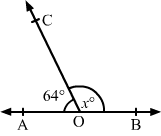
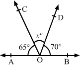
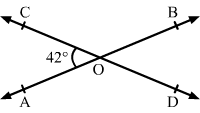
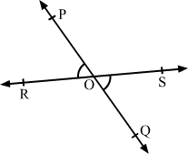

Question:1
Find the complement of each of the following angles:
(i) 35°
(ii) 47°
(iii) 60°
(iv) 73°
Solution:
(i) The given angle measures 35°.
Let the measure of its complement be x.
x + 35° = 90°
or x = (90 - 35 )° = 55°
Hence, the complement of the given angle will be 55°.
(ii) The given angle measures 47°.
Let the measure of its complement be x.
x + 47° = 90°
or x = (90 - 47 )° = 43°
Hence, the complement of the given angle will be 43°.
(iii) The given angle measures 60°.
Let the measure of its complement be x°.
x + 60° = 90°
or x = (90 - 60 )° = 30°
Hence, the complement of the given angle will be 30°.
(iv) The given angle measures 73°.
Let the measure of its complement be x.
x + 73o = 90°
or x = (90 - 73 )° = 17°
Hence, the complement of the given angle will be 17°.
Question:2
Find the supplement of each of the following angles:
(i) 80°
(ii) 54°
(iii) 105°
(iv) 123°
Solution:
(i) The given angle measures 80°.
Let the measure of its supplement be x.
x + 80° = 180°
or x = (180 - 80)° = 100°
Hence, the complement of the given angle will be 100°.
(ii) The given angle measures 54°.
Let the measure of its supplement be x.
x + 54° = 180°
or x = (180 - 54 )° = 126°
Hence, the complement of the given angle will be 126°.
(iii) The given angle measures 105°.
Let the measure of its supplement be x.
x + 105° = 180°
or, x = (180 - 105 )° = 75°
Hence, the complement of the given angle will be 75°.
(iv)
The given angle measures 123°.
Let the measure of its supplement be x.
x + 123° = 180°
or x = (180 - 123 )° = 57°
Hence, the complement of the given angle will be 57°.
Question:3
Among two supplementary angles, the measure of the larger angle is 36° more than the measure of the smaller. Find their measures.
Solution:
Let the two supplementary angles be x° and (180 − x)°.
Since it is given that the measure of the larger angle is 36° more than the smaller angle, let the larger angle be x°.
∴ (180 − x)° + 36° = x°
or 216 = 2x
or 108 = x
Larger angle = 108°
Smaller angle = (108 − 36)°
= 72°
Question:4
Find the angle which is equal to its supplement.
Solution:
Let the measure of the required angle be x.
Since it is its own supplement:
Therefore, the required angle is 90°.
Question:5
Can two angles be supplementary if both of them are:
(i) acute?
(ii) obtuse?
(iii) right?
Solution:
(i) No. If both the angles are acute, i.e. less than 90°, they cannot be supplementary as their sum will always be less than 180°.
(ii) No. If both the angles are obtuse, i.e. more than 90°, they cannot be supplementary as their sum will always be more than 180°.
(iii) Yes. If both the angles are right, i.e. they both measure 90°, then they form a supplementary pair.
90° + 90° = 180°
Question:6
In the given figure,
AOB is a straight line and the ray
OC stands on it.
If ∠
AOC = 64° and ∠
BOC =
x°, find the value of
x.
.png)
Solution:
By linear pair property:
∴ x = 116

Question:7
In the given figure,
AOB is a straight line and the ray
OC stands on it.
If ∠
AOC = (2
x − 10)° and ∠
BOC = (3
x + 20)°, find the value of
x.
Also, find ∠
AOC and ∠
BOC
.png)
Solution:
By linear pair property:
.png)
Question:8
In the given figure, AOB is a straight line and the rays OC and OD stands on it.
If ∠AOC = 65°, ∠BOD = 70° and ∠COD = x° find the value of x.

Solution:
Since AOB is a straight line, we have:
.png)
Question:9
In the given figure, two straight line AB and CD intersect at a point O.
If ∠AOC = 42°, find the measure of each of the angles:

(i) ∠AOD
(ii) ∠BOD
(iii) ∠COB
Solution:
.png)
AB and CD intersect at O and CD is a straight line.
Question:10
In the given figure, two straight line
PQ and
RS intersect at a
O.
If ∠
POS = 114°, find the measure of each of the angles:
.png)
(i) ∠
POR
(ii) ∠
ROQ
(iii) ∠
QOSSolution:

Question:11
In the given figure, rays
OA,
OB,
OC and
OD are such that
∠
AOB = 56°, ∠
BOC = 100°, ∠
COD =
x° and ∠
DOA = 74°.
Find the value of
x.
.png)
Solution:
.png)
Sum of all the angles around a point is 360°.